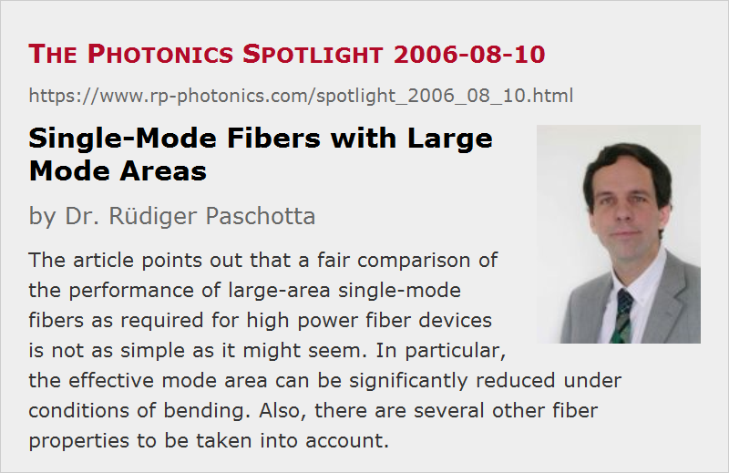

Single-Mode Fibers with Large Mode Areas
Posted on 2006-08-10 as a part of the Photonics Spotlight (available as e-mail newsletter!)
Permanent link: https://www.rp-photonics.com/spotlight_2006_08_10.html
Author: Dr. Rüdiger Paschotta, RP Photonics Consulting GmbH
Abstract: The article points out that a fair comparison of the performance of large-area single-mode fibers as required for high power fiber devices is not as simple as it might seem. In particular, the effective mode area can be significantly reduced under conditions of bending. Also, there are several other fiber properties to be taken into account.
Ref.: J. M. Fini, “Bend-resistant design of conventional and microstructure fibers with very large mode area”, Opt. Express 14 (1), 69 (2006); encyclopedia articles on large mode area fibers and high power fiber lasers and amplifiers

In recent years, the output power available from fiber lasers and fiber amplifiers has been enormously increased. However, this has led to strongly increased optical intensities in the fiber core. Significant further increases of laser intensity are not possible, particularly for fiber devices generating short or ultrashort pulses, since the core glass may be damaged, and optical nonlinearities cause detrimental effects. A simple way of reducing the optical intensities is to use multimode fibers, but this degrades the obtainable beam quality, thus killing one of the essential advantages of fiber devices. Therefore, there is a race for developing single-mode fiber designs with larger and larger effective mode areas.
It is important to realize that the comparison of the performance of different fiber designs is not as simple as one might think. One aspect is that such fibers are often operated while they are strongly bent (coiled) – not only in order to reduce the space requirements, but sometimes also to attenuate higher-order modes in fibers which support not a single transverse mode, but several ones. It has been realized (see the reference above), that for some fiber designs the mode area can be strongly decreased under such conditions, while other designs (e.g. those with a parabolic refractive index profile) may start off with a somewhat smaller mode area but largely preserve this area when being bent. Therefore, one should compare mode areas under the conditions in which such fibers are actually used.
A fair performance comparison, however, involves some other aspects as well. A truly single-mode fiber is clearly preferably when stable and reliable generation of a beam with high beam quality is important. For fibers supporting a few modes, it can be essential to consider the propagation constants of the modes – similar values for different modes can increase mode coupling – as well as the dependence of the bend losses of different modes on the bending radius. This shows that a fair comparison is not a trivial task, and the results may well depend on the actual circumstances under which a fiber is going to be used.
This article is a posting of the Photonics Spotlight, authored by Dr. Rüdiger Paschotta. You may link to this page and cite it, because its location is permanent. See also the RP Photonics Encyclopedia.
Note that you can also receive the articles in the form of a newsletter or with an RSS feed.
Questions and Comments from Users
Here you can submit questions and comments. As far as they get accepted by the author, they will appear above this paragraph together with the author’s answer. The author will decide on acceptance based on certain criteria. Essentially, the issue must be of sufficiently broad interest.
Please do not enter personal data here; we would otherwise delete it soon. (See also our privacy declaration.) If you wish to receive personal feedback or consultancy from the author, please contact him e.g. via e-mail.
By submitting the information, you give your consent to the potential publication of your inputs on our website according to our rules. (If you later retract your consent, we will delete those inputs.) As your inputs are first reviewed by the author, they may be published with some delay.
|  |
If you like this page, please share the link with your friends and colleagues, e.g. via social media:
These sharing buttons are implemented in a privacy-friendly way!